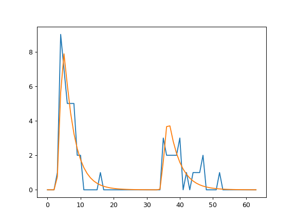
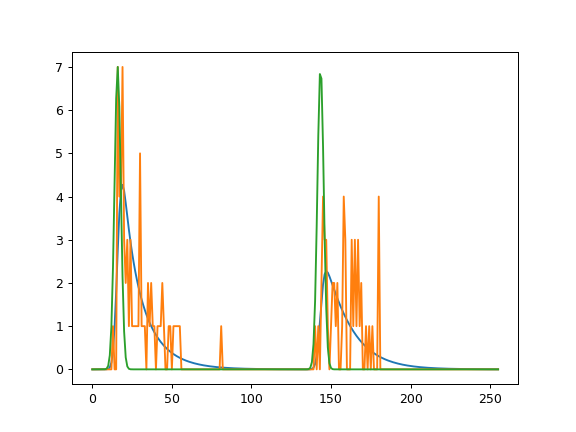

Fits¶
General¶
The fits covered by fit2x (e.g. fit23, fit24, and fit25) all have their own model function, target (objective) function, fit function, and parameter correction function. Briefly, the purpose of these functions is as follows.
Function |
Description |
|---|---|
Model function |
Computes the model for a set of parameters |
Target/objective function |
Computes ob and returns a score for data |
Fit function |
Optimizes the parameters to the data |
Correction function |
Assures reasonable range of parameters |
The model function computes for a set of input parameters the corresponding realization of the model (the model fluorescence decay curve(s)). The target function (more often called objective function) computes the disagreement of the data and the model function for a given set of model parameters. The fitting function optimizes a set of selected input parameters to the data by minimizing the disagreement of the data and the model. Finally, the estimates of the model parameters are corrected by a correction function. These functions have names that relate to the name of the model, e.g., target23 corresponds to fit23. For computationally efficiency, the functions are hardcoded in C.
The models of the different fits differ in their parameters. The parameters of the fits are described in detail below. The target functions explicitly consider the counting noise and provide an estimate of the likelihood of the parameters. The initial values of the parameters are specified by the user. Next, the likelihood of the target is maximized by the Limited-Memory Broyden-Fletcher-Goldfarb-Shanno Algorithm (L-BFGS). L-BFGS is an iterative method for solving unconstrained nonlinear optimization problems. Gradients for the L-BFGS algorithm are approximated by linear interpolation to handle the differentiable components, i.e., the model parameters that are free. The parameters of a model ca be either specified as free or as fixed. Only free parameters are optimized.
Python¶
For a use in python the fit2x module exposes a set of C functions that can be
used to (1) compute model and (2) target/objective function and (3) optimize
model parameters to experimental data. Besides the exposed functions the fit models
are accessible via a simplified object-based interface that reduces the number of
lines of code that need to be written for analyzing fluorescence decay histograms.
The code blocks that are used below to illustrate the fit2x functionality are
extracts from the tests located in the test folder of the fit2x repository. The
test can be used as a more detailed refernce on how to use fit2x.
Model functions can be computed using the modelf2x function of the fit2x
module. Here, the x represents a particular model function. The use of a
fit2x model function is for the model function 23 (modelf23) below.
model function
1 2 3 4 5 6 7 8 9 |
irf_np, time_axis = model_irf(
n_channels=n_channels,
period=period,
irf_position_p=irf_position_p,
irf_position_s=irf_position_s,
irf_width=irf_width
)
dt = time_axis[1] - time_axis[0]
|
To compute a model, first a set of model parameters and a set of corrections need
to be specified. All input parameters for modelf23 are numpy arrays. In addition
to the model parameters and the corrections modelf23 requires an instrument
response function (irf) and a background pattern. The model functions operate on
numpy arrays and modify the numpy array for a model in-place. This means, that the
output of the function is written to the input numpy-array of the model. In the
example above the output is written to the array model.
To compute the value of a target for a realization of model parameters fit2x
provides the functions targetf2x. The inputs of a target function (here
tarferf23) are an numpy array containing the model parameter values and a
structure that contains the corrections and all other necessary data to compute
the value of the objective function (for fit23 i.e. data, irf, backgound, time
resolution).
1 2 3 4 5 6 7 8 9 | [1.55512239e-06, 1.28478411e-06, 1.84127094e-03, 6.97704393e-01
, 5.26292095e+00, 7.46022080e+00, 5.86203555e+00, 4.37710024e+00
, 3.27767338e+00, 2.46136154e+00, 1.85332949e+00, 1.39904465e+00
, 1.05863172e+00, 8.02832214e-01, 6.10103966e-01, 4.64532309e-01
, 3.54320908e-01, 2.70697733e-01, 2.07119266e-01, 1.58689654e-01
, 1.21735290e-01, 9.34921381e-02, 7.18751573e-02, 5.53076815e-02
, 4.25947583e-02, 3.28288183e-02, 2.53192074e-02, 1.95393890e-02
, 1.50872754e-02, 1.16553438e-02, 9.00806647e-03, 6.96482554e-03
, 1.32357360e-06, 1.00072013e-05, 2.67318412e-02, 1.32397314e+00
|
The data needed in addition to the model parameters are passed to the target function
using fit2x.MParam objects that can be created by the fit2x.CreateMParam
function from numpy arrays. The return value of a target function is the score
of the model parameters
Model parameters can be optimized to the data by fit functions for fit 23 the
fit function fit2x.fit23 is used.
1 2 3 4 | # p.plot(data)
# p.plot([x for x in m_param.get_data()])
# p.show()
self.assertEqual(np.allclose(fit_res, x), True)
|
The fit functions takes like the target function an object of the type
fit2x.MParam in addition to the initial values, and a list of fixed model
parameters as an input. The array containing the initial values of the model
parameters are modified in-place buy the fit function.
Alternatively, a simplified python interface can be used to optimize a set of
model as illustrated by the source code embedded in the plot below. The simplified
interface handles the creation of auxiliary data structures such as fit2x.MParam.
(Source code, png)
{kind=link}

In the example shown above, first a fit object of the type fit2x.Fit23 is
created. All necessary data except for the experimental data for a fit is passed
to the fit object when it is created. To perform a fit on experimental data for
a set for a set of initial values, the fit object is called using the inital values
and the data as parameters.
Description of fits¶
fit23¶
fit23 optimizes a single rotational correlation time \(\rho\) and a fluorescence lifetime \(\tau\) to a polarization resolved fluorescence decay considering the fraction of scattered light and instrument response function in the two detection channels for the parallel and perpendicular fluorescence. Fit23 operates on fluorescence decays in the Jordi-format.
(Source code, png)
{kind=link}

Simulation and analysis of low photon count data by fit2x.fit23.¶
fit23 is intended to be used for data with very few photons, e.g. for pixel analysis in fluorescence lifetime image microscopy (FLIM) or for single-molecule spectroscopy. The fit implements a maximum likelihood estimimator as previously described [MCH+01]. Briefly, the MLE fit quality parameter 2I* = \(-2\ln L(n,g)\) (where \(L\) is the likelihood function, \(n\) are the experimental counts, and \(g\) is the model function) is minimized. The model function \(g\) under magic-angle is given by:
\(g_i=N_g \left[ (1-\gamma) \frac{irf_i \ast \exp(iT/k\tau) + c}{\sum_{i=0}^{k}irf_i \ast \exp(iT/k\tau) + c} + \gamma \frac{bg_i}{\sum_i^{k} bg_i} \right]\)
\(N_e\) is not a fitting parameter but set to the experimental number of photons \(N\), \(\ast\) is the convolution operation, \(\tau\) is the fluorescence lifetime, \(irf\) is the instrument response function, \(i\) is the channel number, \(bg_i\) is the background count in the channel \(i\),
The convolution by fit23 is computed recusively and accounts for high repetition rates:
:math:`irf_i ast exp(iT/ktau) = sum_{j=1}^{min(i,l)}irf_jexp(-(i-j)T/ktau) + sum_{j=i+1}^{k}irf_jexp(-(i+k-j)T/ktau) `
The anisotropy treated as previously described [SVE+99].
The correction factors needed for a correct anisotropy used by fit2x are
defined in the glossary (Anisotropy).
fit24¶
Fit24 optimizes is a bi-exponential model function with two fluorescence lifetimes \(\tau_1\), \(\tau_2\), and amplitude of the second lifetime \(a_2\), the fraction scattered light \(\gamma\), and a constant offset to experimental data. Fit24 does not describe anisotropy. The decays passed to the fit in the Jordi format. The two decays in the Jordi array are both treated by the same model function and convoluted with the corresponding instrument response function. The model function is
where \(\Delta t\) is the time per micro time channel, \(i\) is the micro time channel number, \(a_2\) is the fraction of the second species. The model function is corrected for the fraction of background and a constant offset.
Where, \(c\) is a constant offset, \(B\) the background pattern, \(M\) the model function and \(\gamma\) the fraction of scattered light.
fit25¶
Selects the lifetime out of a set of 4 fixed lifetimes that best describes the data. Works with polarization resolved Jordi stacks, computes rotational correlation time by the anisotropy. This function selects out of a set of 4 lifetimes tau the lifetime that fits best the data.
fit26¶
Pattern fit. Determines the fraction \(f\) of two mixed patterns.
(No convolution of patterns, area of pattern is normalized by fit)